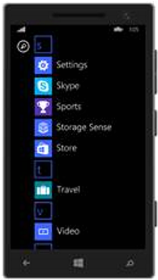
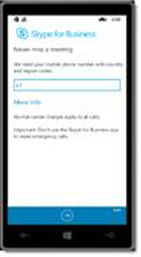

|
<< Click to Display Table of Contents >> Navigation: »No topics above this level« Windows Phone 8.1 Devices |
Key Step: The following steps will need to be performed once on each of the 8-10 client devices. Not all apps will be used in the industry guides, but setting them up on the phone will give you the flexibility to show them during the session.
Setup Tip: If you have previously used the Windows Phone, you will need to first delete the account you used in the past and then proceed with adding an account.
To begin, connect to the WLAN on the device by navigating to Settings.

In the settings screen, select Wi-Fi and look for the name of the WLAN that was setup and configured for CIE.
Select the WLAN and then enter a password, if necessary, before selecting done.
Once connected, start the installation and configuration of the Outlook/Exchange mailbox on the device by completing the following steps.
Still in Settings, select email+accounts and then choose Add an account. Select Exchange as the account type.
Enter the email address of the user you want to configure (e.g., karenb@<yourtenantname>.onmicrosoft.com), followed by that user’s password (in this case, pass@word1), then select sign in and then done. This user’s email, contacts and calendar should begin to sync to the device.
Key step: In order to display all the emails in the persona's inbox, you must configure each of the email accounts (under Settings) that have been setup and choose to Download email from any time. The Windows Phone, by default, will be set to display email from the last seven days so this must be changed to see all.
Tap on the magnifying glass to open Cortana and tap allow so the app will initialize and be ready for use during the session. Perform one search for a local business and open it all the way to the Map App and click allow on any prompts.
In order to download and install apps from the Store (e.g., Skype for Business, Yammer), as well as show a personal calendar, you will need to set up a personal Live ID account in Email & Accounts on the Windows Phone. Once this account has been added, you can create calendar events that conflict with those we have already configured in Outlook/Exchange.
Common Question: Each Live ID will work on up to five devices.
For Skype for Business, navigate to the Store and search for Skype for Business.
Tap Install. Skype for Business will finishing installing from the app list.
Open Skype for Business, tap through several screens prior to signing in for the first time. Enter the credentials for the user persona of this device, by entering the entire email address (e.g., karenb@<yourtenantname>.onmicrosoft.com) and pass@word1 before tapping the checkmark icon.
On the screen below, you do not need to enter a valid phone number to proceed. For example, you may enter 1-555-123-4567. Click No, Thanks on the Customer Experience Improvement Program.

Next, you will be prompted to turn on Push Notifications. Swipe to the left to turn off push notifications.
Tap the install button at the bottom of the screen. This will begin the download and installation process, which provides a status bar below the app in the list.
Once the installation has completed, you can launch the app by tapping on it one last time.
Select Log In and provide the credentials for the user persona of this device by entering the entire email address (e.g., karenb@<yourtenantname>.onmicrosoft.com) and pass@word1 before tapping Log In and OK.
The device is now fully set up and ready for the CIE session. Repeat the steps in this section on each Windows Phone 8.1.